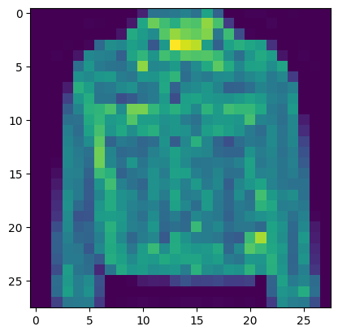
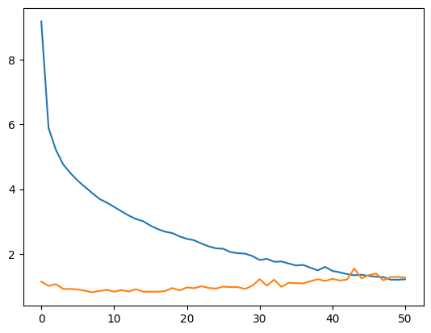
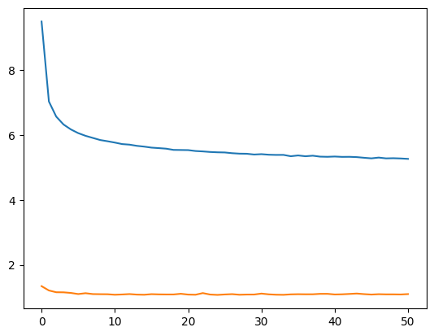
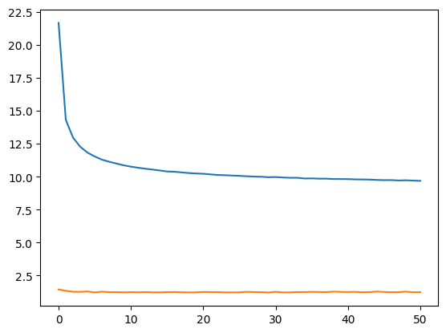
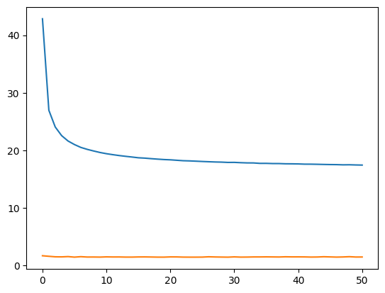
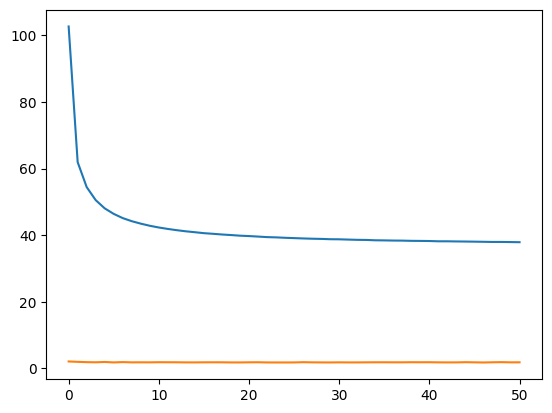
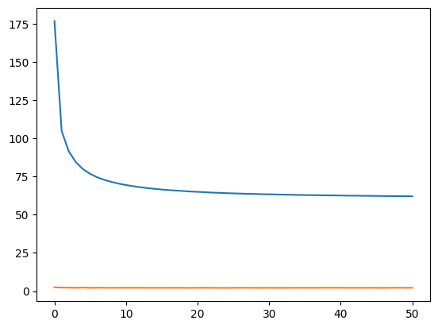
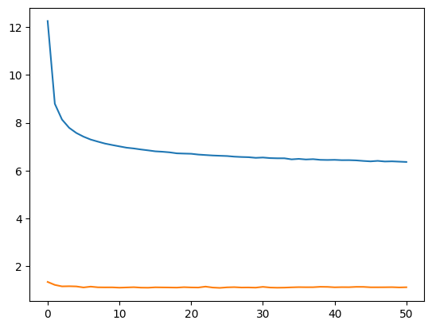
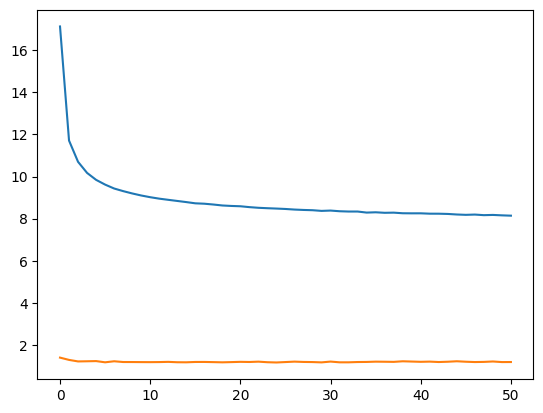
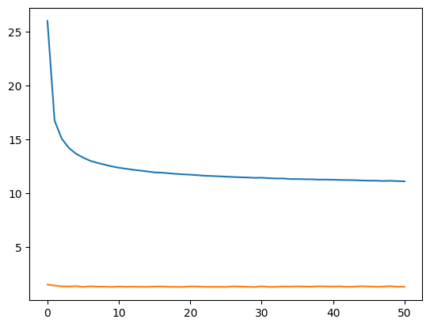

import torch
import torch.nn as nn
import torch.nn.functional as F
import torch.optim as optim
from torchvision import datasets, transforms
import matplotlib.pyplot as plt
from tqdm.auto import tqdm
import numpy as np
import timeKnowledge Distillation - Response-based Knowledge

데이터 준비
mnist_transform = transforms.Compose([
transforms.Resize(size = (28*28)),
transforms.ToTensor(),
transforms.Normalize((0.5,),(1.0,))
])train_data = datasets.FashionMNIST('./data', train=True, download=True,transform=transforms.ToTensor())
valid_data = datasets.FashionMNIST('./data', train=False, download=True,transform=transforms.ToTensor())
test_data = datasets.FashionMNIST('./data', train=False, download=True,transform=transforms.ToTensor())Downloading http://fashion-mnist.s3-website.eu-central-1.amazonaws.com/train-images-idx3-ubyte.gz
Downloading http://fashion-mnist.s3-website.eu-central-1.amazonaws.com/train-images-idx3-ubyte.gz to ./data/FashionMNIST/raw/train-images-idx3-ubyte.gz
Extracting ./data/FashionMNIST/raw/train-images-idx3-ubyte.gz to ./data/FashionMNIST/raw
Downloading http://fashion-mnist.s3-website.eu-central-1.amazonaws.com/train-labels-idx1-ubyte.gz
Downloading http://fashion-mnist.s3-website.eu-central-1.amazonaws.com/train-labels-idx1-ubyte.gz to ./data/FashionMNIST/raw/train-labels-idx1-ubyte.gz
Extracting ./data/FashionMNIST/raw/train-labels-idx1-ubyte.gz to ./data/FashionMNIST/raw
Downloading http://fashion-mnist.s3-website.eu-central-1.amazonaws.com/t10k-images-idx3-ubyte.gz
Downloading http://fashion-mnist.s3-website.eu-central-1.amazonaws.com/t10k-images-idx3-ubyte.gz to ./data/FashionMNIST/raw/t10k-images-idx3-ubyte.gz
Extracting ./data/FashionMNIST/raw/t10k-images-idx3-ubyte.gz to ./data/FashionMNIST/raw
Downloading http://fashion-mnist.s3-website.eu-central-1.amazonaws.com/t10k-labels-idx1-ubyte.gz
Downloading http://fashion-mnist.s3-website.eu-central-1.amazonaws.com/t10k-labels-idx1-ubyte.gz to ./data/FashionMNIST/raw/t10k-labels-idx1-ubyte.gz
Extracting ./data/FashionMNIST/raw/t10k-labels-idx1-ubyte.gz to ./data/FashionMNIST/raw
100%|██████████| 26421880/26421880 [00:00<00:00, 116761645.70it/s]
100%|██████████| 29515/29515 [00:00<00:00, 6130887.61it/s]
100%|██████████| 4422102/4422102 [00:00<00:00, 63049467.35it/s]
100%|██████████| 5148/5148 [00:00<00:00, 21420909.71it/s]train_loader = torch.utils.data.DataLoader(dataset = train_data, batch_size= 64, shuffle=True)
valid_loader = torch.utils.data.DataLoader(dataset = valid_data, batch_size= 64, shuffle=True)
test_loader = torch.utils.data.DataLoader(dataset = test_data, batch_size= 64, shuffle=True)for batch_idx, (x, target) in enumerate(train_loader):
plt.imshow(x[0,0])
# print(x.reshape(-1,28*28)[0], target[0])
break
네트워크 준비
class teacher_model(nn.Module):
def __init__(self):
super(teacher_model, self).__init__()
self.layer1 = nn.Linear(784,512)
self.layer2 = nn.Linear(512,256)
self.layer3 = nn.Linear(256,128)
self.layer4 = nn.Linear(128,64)
self.layer5 = nn.Linear(64,32)
self.layer6 = nn.Linear(32,10)
def forward(self, x):
x = x.view(-1,28*28)
output = F.relu(self.layer1(x))
output = F.relu(self.layer2(output))
output = F.relu(self.layer3(output))
output = F.relu(self.layer4(output))
output = F.relu(self.layer5(output))
output = self.layer6(output)
return outputclass student_model(nn.Module):
def __init__(self):
super(student_model, self).__init__()
self.layer = nn.Linear(784,10)
def forward(self, x):
x = x.view(-1,28*28)
output = self.layer(x)
return output네트워크 학습
def T_train(T_model, train_loader, valid_loader, epochs):
device = torch.device("cuda:0" if torch.cuda.is_available() else "cpu")
batch_size = 64
T_model = T_model.to(device)
loss_fn = nn.CrossEntropyLoss()
optimizr = optim.Adam(T_model.parameters(), lr=0.001)
T_train_loss = []
T_val_loss = []
for epch in tqdm(range(epochs+1)):
#t_epoch_start = time.time()
epch_loss = 0.0
val_epch_loss = 0.0
# 모델 학습
T_model.train()
for batch_idx, (x, target) in enumerate(train_loader):
x, target = x.to(device), target.to(device)
target = F.one_hot(target.to(torch.int64), num_classes = 10)
yhat = T_model(x)
loss = loss_fn(yhat.float(), target.float())
optimizr.zero_grad()
loss.requires_grad_(True)
loss.backward()
optimizr.step()
epch_loss += loss.item()
# 모델 검증
T_model.eval()
with torch.no_grad():
for batch_idx, (x,y) in enumerate(valid_loader):
x, y = x.to(device), y.to(device)
y = F.one_hot(y.to(torch.int64), num_classes = 10)
val_epch_loss += loss_fn(T_model(x).float(), y.float()).item()
#t_epoch_finish = time.time()
T_train_loss.append(epch_loss / batch_size)
T_val_loss.append(val_epch_loss / batch_size)
# if epch % 10 == 0:
# print('Epoch: {}, Loss: {}, Epoch_time: {:.4f}'
# .format(epch, epch_loss, t_epoch_finish - t_epoch_start))
return T_train_loss, T_val_losstorch.manual_seed(0)
torch.cuda.manual_seed(0)
torch.cuda.manual_seed_all(0)
T_model = teacher_model()
T_tr_loss, T_vl_loss = T_train(T_model, train_loader,valid_loader, epochs = 50)plt.plot(np.arange(51), T_tr_loss)
plt.plot(np.arange(51), T_vl_loss)
plt.show()
def S_train(S_model, train_loader, valid_loader, epochs):
device = torch.device("cuda:0" if torch.cuda.is_available() else "cpu")
batch_size = 64
S_model = S_model.to(device)
loss_fn = nn.CrossEntropyLoss()
optimizr = optim.Adam(S_model.parameters(), lr=0.001)
S_train_loss = []
S_val_loss = []
for epch in tqdm(range(epochs+1)):
#t_epoch_start = time.time()
epch_loss = 0.0
val_epch_loss = 0.0
# 모델 학습
S_model.train()
for batch_idx, (x, target) in enumerate(train_loader):
x, target = x.to(device), target.to(device)
target = F.one_hot(target.to(torch.int64), num_classes = 10)
yhat = S_model(x)
loss = loss_fn(yhat.float(), target.float())
optimizr.zero_grad()
loss.requires_grad_(True)
loss.backward()
optimizr.step()
epch_loss += loss.item()
# 모델 검증
S_model.eval()
with torch.no_grad():
for batch_idx, (x,y) in enumerate(valid_loader):
x, y = x.to(device), y.to(device)
y = F.one_hot(y.to(torch.int64), num_classes = 10)
val_epch_loss += loss_fn(S_model(x).float(), y.float()).item()
#모델 결과 확인
# t_epoch_finish = time.time()
S_train_loss.append(epch_loss / batch_size)
S_val_loss.append(val_epch_loss / batch_size)
# if epch % 10 == 0:
# print('Epoch: {}, Loss: {}, Epoch_time: {:.4f}'
# .format(epch, epch_loss, t_epoch_finish - t_epoch_start))
return S_train_loss, S_val_losstorch.manual_seed(0)
torch.cuda.manual_seed(0)
torch.cuda.manual_seed_all(0)
S_model = student_model()
tr_s_loss, vl_s_loss = S_train(S_model, train_loader, valid_loader, epochs = 50)plt.plot(np.arange(51), tr_s_loss)
plt.plot(np.arange(51), vl_s_loss)
plt.show()
모델 저장
torch.save(obj = T_model.state_dict(), f = 'teacher_model_parm.pth')
torch.save(obj = S_model.state_dict(), f = 'student_model_parm.pth')모델 불러오기
new_T_model = teacher_model()
new_T_model.load_state_dict(torch.load('teacher_model_parm.pth'))<All keys matched successfully>new_S_model = student_model()
new_S_model.load_state_dict(torch.load('student_model_parm.pth'))<All keys matched successfully>네트워크 검증
new_T_model.eval()
device = torch.device("cuda:0" if torch.cuda.is_available() else "cpu")
new_T_model = new_T_model.to(device)
T_acc = []
for batch_idx, (x,y) in enumerate(valid_loader):
x, y = x.to(device), y.to(device)
yhat = new_T_model(x)
y_pred = np.argmax(yhat.detach().to('cpu'), axis=1)
T_acc.append((y_pred == y.to('cpu')).sum().item() / len(y))
print("Teacher model acc: {:.4f}".format(sum(T_acc)/len(T_acc)))Teacher model acc: 0.8862new_S_model.eval()
device = torch.device("cuda:0" if torch.cuda.is_available() else "cpu")
new_S_model = new_S_model.to(device)
T_acc = []
for batch_idx, (x,y) in enumerate(valid_loader):
x, y = x.to(device), y.to(device)
yhat = new_S_model(x)
y_pred = np.argmax(yhat.detach().to('cpu'), axis=1)
T_acc.append((y_pred == y.to('cpu')).sum().item() / len(y))
print("student model acc without distillation: {:.4f}".format(sum(T_acc)/len(T_acc)))student model acc without distillation: 0.8424Total Loss 정의
def Total_Loss_fn(student_pred, teacher_pred, alpha, T):
loss = F.kl_div(F.log_softmax(student_pred / T, dim=1), F.softmax(teacher_pred / T, dim=1), reduction='batchmean') * (T ** 2) * alpha + F.cross_entropy(student_pred, y) * (1 - alpha)
return lossLoss function 작동 실험
test_model = student_model()
test_model = test_model.to(device)y2_pred = test_model(x) # 엉망인 결과new_S_model.to(device) # 어느정도 학습된 모델의 결과
y1_pred = new_S_model(x)new_T_model.to(device) # target
y_target = new_T_model(x)Total_Loss_fn(y2_pred,y_target, T=3,alpha=0.5)tensor(9.6223, device='cuda:0', grad_fn=<AddBackward0>)Knowledge Distillation으로 Student Model 학습
def Distillation_train(T_model, S_model, train_loader, valid_loader, epochs, lr, T, alpha):
device = torch.device("cuda:0" if torch.cuda.is_available() else "cpu")
batch_size = 64
T_model = T_model.to(device)
S_model = S_model.to(device)
optimizr = optim.Adam(S_model.parameters(), lr= lr)
loss_fn = nn.CrossEntropyLoss()
train_loss = []
val_loss = []
for epch in tqdm(range(epochs+1)):
#t_epoch_start = time.time()
epch_loss = 0.0
val_epch_loss = 0.0
# 모델 학습
T_model.train()
S_model.train()
for batch_idx, (x, target) in enumerate(train_loader):
x, target = x.to(device), target.to(device)
target = F.one_hot(target.to(torch.int64), num_classes = 10)
teacher_pred = T_model(x)
student_pred = S_model(x)
loss = F.kl_div(F.log_softmax(student_pred / T, dim=1), F.softmax(teacher_pred / T, dim=1), reduction='batchmean') * (T ** 2) * alpha + F.cross_entropy(student_pred, target.float()) * (1 - alpha)
optimizr.zero_grad()
loss.requires_grad_(True)
loss.backward()
optimizr.step()
epch_loss += loss.item()
# 모델 검증
S_model.eval()
with torch.no_grad():
for batch_idx, (x,y) in enumerate(valid_loader):
x, y = x.to(device), y.to(device)
y = F.one_hot(y.to(torch.int64), num_classes = 10)
val_epch_loss += loss_fn(S_model(x).float(), y.float()).item()
#모델 결과 확인
# t_epoch_finish = time.time()
train_loss.append(epch_loss / batch_size)
val_loss.append(val_epch_loss / batch_size)
# if epch % 10 == 0:
# print('Epoch: {}, Loss: {}, Epoch_time: {:.4f}'
# .format(epch, epch_loss, t_epoch_finish - t_epoch_start))
return train_loss, val_loss적절한 T 찾기
T=2일때의 Distillation
torch.manual_seed(0)
torch.cuda.manual_seed(0)
torch.cuda.manual_seed_all(0)
temp1 =[]
temp2 =[]
test_model_2 = student_model()
temp1, temp2 = Distillation_train(T_model=new_T_model, S_model=test_model_2, train_loader= train_loader, valid_loader= valid_loader, epochs = 50, lr = 0.001, T = 2.0, alpha = 0.5)plt.plot(np.arange(51), temp1)
plt.plot(np.arange(51), temp2)
plt.show()
test_model_2.eval()
device = torch.device("cuda:0" if torch.cuda.is_available() else "cpu")
test_model_2 = test_model_2.to(device)
T_acc = []
for batch_idx, (x,y) in enumerate(valid_loader):
x, y = x.to(device), y.to(device)
yhat = test_model_2(x)
y_pred = np.argmax(yhat.detach().to('cpu'), axis=1)
T_acc.append((y_pred == y.to('cpu')).sum().item() / len(y))
print("student model acc with distillation: {:.4f}".format(sum(T_acc)/len(T_acc)))student model acc with distillation: 0.8452T = 3일때의 Distillation
torch.manual_seed(0)
torch.cuda.manual_seed(0)
torch.cuda.manual_seed_all(0)
temp1 =[]
temp2 =[]
test_model_3 = student_model()
temp1, temp2 = Distillation_train(T_model=new_T_model, S_model=test_model_3, train_loader= train_loader, valid_loader= valid_loader, epochs = 50, lr = 0.001, T = 3.0, alpha = 0.5)plt.plot(np.arange(51), temp1)
plt.plot(np.arange(51), temp2)
plt.show()
test_model_3.eval()
device = torch.device("cuda:0" if torch.cuda.is_available() else "cpu")
test_model_3 = test_model_3.to(device)
T_acc = []
for batch_idx, (x,y) in enumerate(valid_loader):
x, y = x.to(device), y.to(device)
yhat = test_model_3(x)
y_pred = np.argmax(yhat.detach().to('cpu'), axis=1)
T_acc.append((y_pred == y.to('cpu')).sum().item() / len(y))
print("student model acc with distillation: {:.4f}".format(sum(T_acc)/len(T_acc)))student model acc with distillation: 0.8384T = 5일때의 Distillation
torch.manual_seed(0)
torch.cuda.manual_seed(0)
torch.cuda.manual_seed_all(0)
temp1 =[]
temp2 =[]
test_model_5 = student_model()
temp1, temp2 = Distillation_train(T_model=new_T_model, S_model=test_model_5, train_loader= train_loader, valid_loader= valid_loader, epochs = 50, lr = 0.001, T = 5.0, alpha = 0.5)plt.plot(np.arange(51), temp1)
plt.plot(np.arange(51), temp2)
plt.show()
test_model_5.eval()
device = torch.device("cuda:0" if torch.cuda.is_available() else "cpu")
test_model_5 = test_model_5.to(device)
T_acc = []
for batch_idx, (x,y) in enumerate(valid_loader):
x, y = x.to(device), y.to(device)
yhat = test_model_5(x)
y_pred = np.argmax(yhat.detach().to('cpu'), axis=1)
T_acc.append((y_pred == y.to('cpu')).sum().item() / len(y))
print("student model acc with distillation: {:.4f}".format(sum(T_acc)/len(T_acc)))student model acc with distillation: 0.8243T = 7일때 Distillation
torch.manual_seed(0)
torch.cuda.manual_seed(0)
torch.cuda.manual_seed_all(0)
temp1 =[]
temp2 =[]
test_model_7 = student_model()
temp1, temp2 = Distillation_train(T_model=new_T_model, S_model=test_model_7, train_loader= train_loader, valid_loader= valid_loader, epochs = 50, lr = 0.001, T = 7.0, alpha = 0.5)plt.plot(np.arange(51), temp1)
plt.plot(np.arange(51), temp2)
plt.show()
test_model_7.eval()
device = torch.device("cuda:0" if torch.cuda.is_available() else "cpu")
test_model_7 = test_model_7.to(device)
T_acc = []
for batch_idx, (x,y) in enumerate(valid_loader):
x, y = x.to(device), y.to(device)
yhat = test_model_7(x)
y_pred = np.argmax(yhat.detach().to('cpu'), axis=1)
T_acc.append((y_pred == y.to('cpu')).sum().item() / len(y))
print("student model acc with distillation: {:.4f}".format(sum(T_acc)/len(T_acc)))student model acc with distillation: 0.8129- Temperture 바꾸기 (Distillation 없이 학습 진행하면 정확도는 84.24%)
| T value | acc | \(\alpha\) |
|---|---|---|
| 2 | 84.52 | 0.5 |
| 3 | 83.84 | 0.5 |
| 5 | 82.43 | 0.5 |
| 7 | 81.29 | 0.5 |
적절한 \(\alpha\) 찾기
\(\alpha = 0.1\)일때의 Distillation
torch.manual_seed(0)
torch.cuda.manual_seed(0)
torch.cuda.manual_seed_all(0)
temp1 =[]
temp2 =[]
test_model_01 = student_model()
temp1, temp2 = Distillation_train(T_model=new_T_model, S_model=test_model_01, train_loader= train_loader, valid_loader= valid_loader, epochs = 50, lr = 0.001, T = 2.0, alpha = 0.1)
plt.plot(np.arange(51), temp1)
plt.plot(np.arange(51), temp2)
plt.show()
test_model_01.eval()
device = torch.device("cuda:0" if torch.cuda.is_available() else "cpu")
test_model_01 = test_model_01.to(device)
T_acc = []
for batch_idx, (x,y) in enumerate(valid_loader):
x, y = x.to(device), y.to(device)
yhat = test_model_01(x)
y_pred = np.argmax(yhat.detach().to('cpu'), axis=1)
T_acc.append((y_pred == y.to('cpu')).sum().item() / len(y))
print("student model acc with distillation: {:.4f}".format(sum(T_acc)/len(T_acc)))
student model acc with distillation: 0.8455\(\alpha = 0.3\)일때의 Distillation
torch.manual_seed(0)
torch.cuda.manual_seed(0)
torch.cuda.manual_seed_all(0)
temp1 =[]
temp2 =[]
test_model_03 = student_model()
temp1, temp2 = Distillation_train(T_model=new_T_model, S_model=test_model_03, train_loader= train_loader, valid_loader= valid_loader, epochs = 50, lr = 0.001, T = 2.0, alpha = 0.3)
plt.plot(np.arange(51), temp1)
plt.plot(np.arange(51), temp2)
plt.show()
test_model_03.eval()
device = torch.device("cuda:0" if torch.cuda.is_available() else "cpu")
test_model_03 = test_model_03.to(device)
T_acc = []
for batch_idx, (x,y) in enumerate(valid_loader):
x, y = x.to(device), y.to(device)
yhat = test_model_03(x)
y_pred = np.argmax(yhat.detach().to('cpu'), axis=1)
T_acc.append((y_pred == y.to('cpu')).sum().item() / len(y))
print("student model acc with distillation: {:.4f}".format(sum(T_acc)/len(T_acc)))
student model acc with distillation: 0.8469\(\alpha = 0.7\)일때의 Distillation
torch.manual_seed(0)
torch.cuda.manual_seed(0)
torch.cuda.manual_seed_all(0)
temp1 =[]
temp2 =[]
test_model_07 = student_model()
temp1, temp2 = Distillation_train(T_model=new_T_model, S_model=test_model_07, train_loader= train_loader, valid_loader= valid_loader, epochs = 50, lr = 0.001, T = 2.0, alpha = 0.7)
plt.plot(np.arange(51), temp1)
plt.plot(np.arange(51), temp2)
plt.show()
test_model_07.eval()
device = torch.device("cuda:0" if torch.cuda.is_available() else "cpu")
test_model_07 = test_model_07.to(device)
T_acc = []
for batch_idx, (x,y) in enumerate(valid_loader):
x, y = x.to(device), y.to(device)
yhat = test_model_07(x)
y_pred = np.argmax(yhat.detach().to('cpu'), axis=1)
T_acc.append((y_pred == y.to('cpu')).sum().item() / len(y))
print("student model acc with distillation: {:.4f}".format(sum(T_acc)/len(T_acc)))
student model acc with distillation: 0.8426- \(\alpha\) 바꾸기 (Distillation 없이 학습 진행하면 정확도는 84.24%)
| T value | acc | \(\alpha\) |
|---|---|---|
| 2 | 84.55 | 0.1 |
| 2 | 84.69 | 0.3 |
| 2 | 84.52 | 0.5 |
| 2 | 84.26 | 0.7 |
▶ T = 2, α = 0.3 일 때 Response-based Knowledge는 최적의 성능을 보임
Distillation을 하지 않은 Student Model보다 0.5% 높은 정확도를 보임